本项目实现了更一般情况下的快速离散傅里叶变换（DFT），
$$ Y_q=\sum_{p=0}^{n-1}{X_p\mathrm{e}^{-\mathrm{i}2\pi kpq}}\,\,\left( k\in \mathbb{R} \right) $$
进而实现了更方便易用的连续傅里叶变换（FT）积分数值计算算法。
该算法不用限制原函数与像函数的网格尺寸，实现了针对任意区域任意精度的目标像函数计算。
$$ U\left( x,y \right) =\frac{1}{\mathrm{j}\lambda z}\iint_{-\infty}^{+\infty}{U_0\left( x_0,y_0 \right) \mathrm{e}^{\mathrm{j}k\sqrt{z^2+\left( x-x_0 \right) ^2+\left( y-y_0 \right) ^2}}\mathrm{d}x_0\mathrm{d}y_0} $$
$$ U\left( x,y \right) =\frac{\mathrm{e}^{\mathrm{j}kz}}{\mathrm{j}\lambda z}\iint_{-\infty}^{+\infty}{U_0\left( x_0,y_0 \right) \mathrm{e}^{\mathrm{j}k\frac{\left( x-x_0 \right) ^2+\left( y-y_0 \right) ^2}{2z}}\mathrm{d}x_0\mathrm{d}y_0} $$
$$ U\left( x,y \right) =\frac{\mathrm{e}^{\mathrm{j}kz}}{\mathrm{j}\lambda z}e^{\mathrm{j}\frac{k}{2z}\left( x^2+y^2 \right)}\iint_{-\infty}^{+\infty}{U_0\left( x_0,y_0 \right) \mathrm{e}^{-\mathrm{j}\frac{k}{z}\left( x_0x+y_0y \right)}\mathrm{d}x_0\mathrm{d}y_0} $$
$$ \left\{ \begin{aligned} A_0\left( \xi ,\eta \right) &=\iint_{-\infty}^{+\infty}{U_0\left( x_0,y_0 \right) \mathrm{e}^{-\mathrm{j}2\pi \left( \xi x_0+\eta y_0 \right)}\mathrm{d}x_0\mathrm{d}y_0}\\ A\left( \xi ,\eta \right) &=A_0\left( \xi _0,\eta _0 \right) e^{\mathrm{j}kz\sqrt{1-\left( \lambda \xi \right) ^2-\left( \lambda \eta \right) ^2}}\\ U\left( x,y \right) &=\iint_{-\infty}^{+\infty}{A\left( \xi ,\eta \right) \mathrm{e}^{\mathrm{j}2\pi \left( \xi x+\eta y \right)}\mathrm{d}\xi \mathrm{d}\eta}\\ \end{aligned} \right. $$
时间复杂度O(N2)
$$ \begin{cases} F\left( x \right)\\ =\int_{-\infty}^{+\infty}{f\left( x_0 \right) \mathrm{e}^{-\mathrm{j}2\pi x_0x}\mathrm{d}x_0}\\ =\frac{x_{\max}-x_{\min}}{m-1}\sum_{i=0}^{m-1}{f\left( \frac{x_{\max}-x_{\min}}{m-1}i+x_{\min} \right) \mathrm{e}^{-\mathrm{j}2\pi \left( \frac{x_{\max}-x_{\min}}{m-1}i+x_{\min} \right) \left( \frac{X_{\max}-X_{\min}}{M-1}I+X_{\min} \right)}}\\ =A\sum_i^{m-1}{f\left( Ai+x_{\min} \right) \mathrm{e}^{-\mathrm{j}2\pi \left( BiI+Ci+DI+E \right)}}\\ =A\left\{ \sum_i^{m-1}{\left[ f\left( Ai+x_{\min} \right) \mathrm{e}^{-\mathrm{j}2\pi Ci} \right] \mathrm{e}^{-\mathrm{j}2\pi BiI}} \right\} \mathrm{e}^{-\mathrm{j}2\pi \left( DI+E \right)}\\ =...\\ \end{cases} $$
最后，一般情况下的离散傅里叶变换（DFT）计算如下：
$$ \begin{cases} Y_q=\sum_{p=0}^{n-1}{X_p\mathrm{e}^{-\mathrm{i}2\pi kpq}}\,\,\left( k\in \mathbb{R} \right)\\ =\sum_{p=0}^{n-1}{X_p\mathrm{e}^{\mathrm{i}\pi k\left[ \left( p-q \right) ^2-p^2-q^2 \right]}}\\ =\left[ \sum_{p=0}^{n-1}{X_p\mathrm{e}^{-\mathrm{i}\pi kp^2}\mathrm{e}^{\mathrm{i}\pi k\left( p-q \right) ^2}} \right] \mathrm{e}^{-\mathrm{i}\pi kq^2}\\ =\left( X_p\mathrm{e}^{-\mathrm{i}\pi kp^2}*\mathrm{e}^{\mathrm{i}\pi kp^2} \right) \mathrm{e}^{-\mathrm{i}\pi kq^2}\\ =\mathscr{F} ^{-1}\left\{ \mathscr{F} \left\{ X_p\mathrm{e}^{-\mathrm{i}\pi kp^2}*\mathrm{e}^{\mathrm{i}\pi kp^2} \right\} \right\} \mathrm{e}^{-\mathrm{i}\pi kq^2}\\ =\mathscr{F} ^{-1}\left\{ \mathscr{F} \left\{ X_p\mathrm{e}^{-\mathrm{i}\pi kp^2} \right\} \mathscr{F} \left\{ \mathrm{e}^{\mathrm{i}\pi kp^2} \right\} \right\} \mathrm{e}^{-\mathrm{i}\pi kq^2}\\ \end{cases} $$
时间复杂度Nlog(N)，显著优于简单离散积分
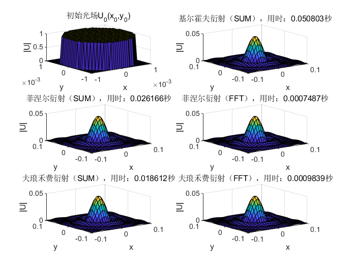
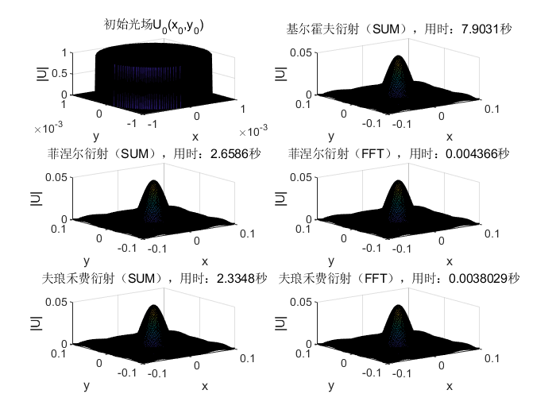
1024*1024 （简单离散积分无法跑出）
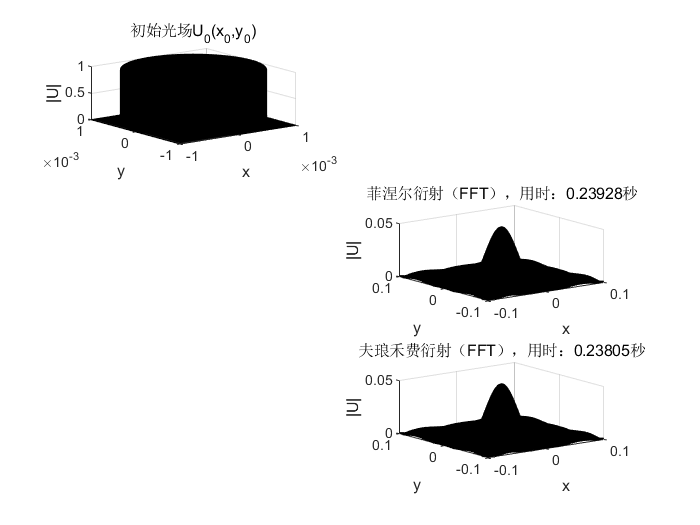
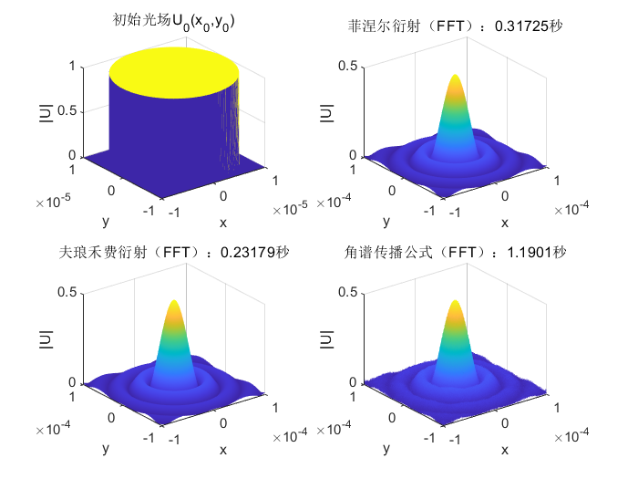
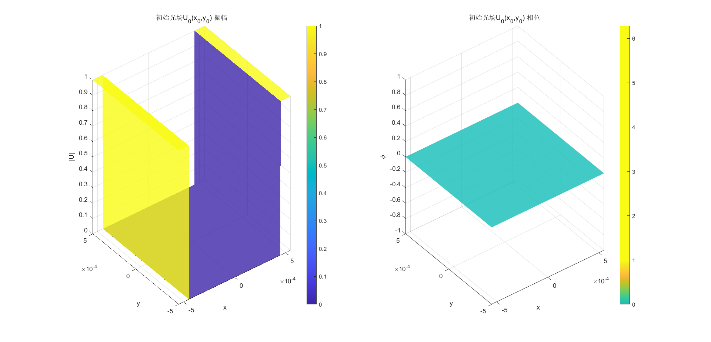
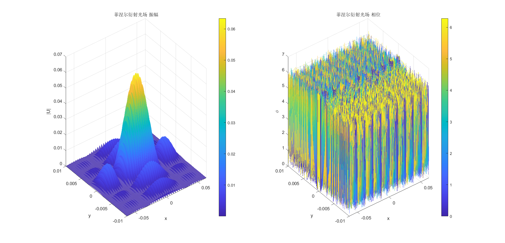
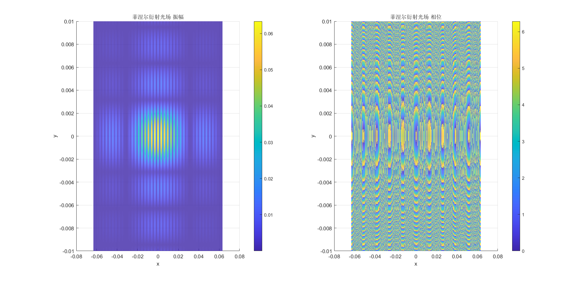
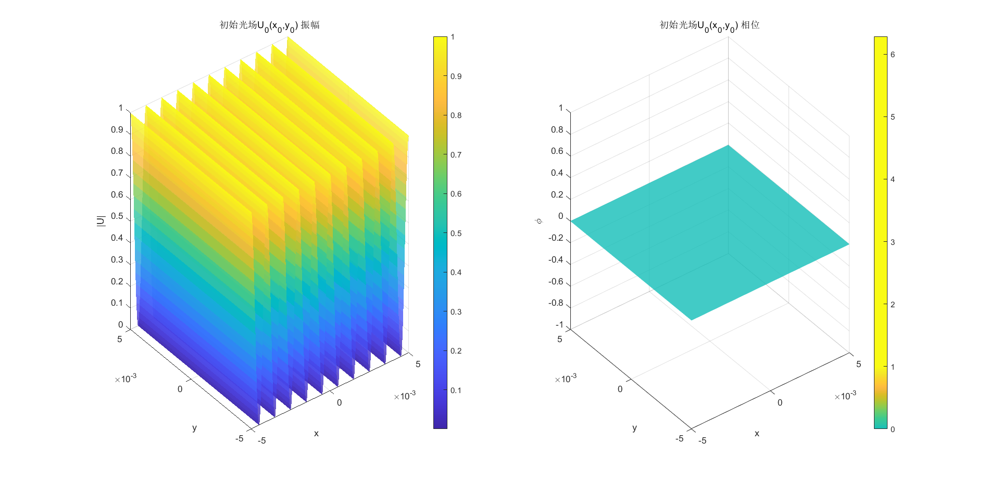
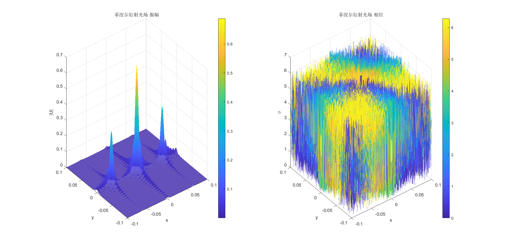
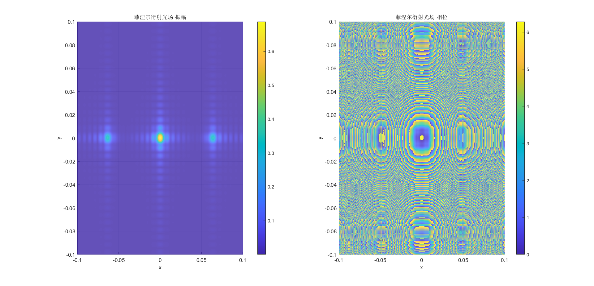
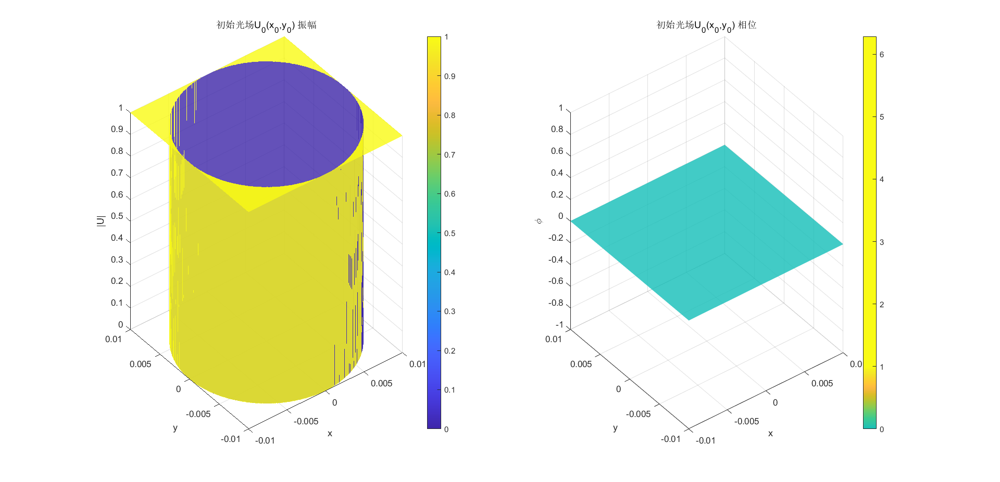
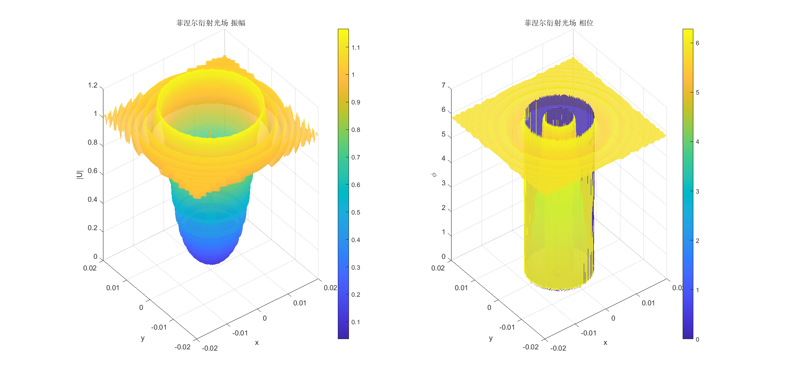
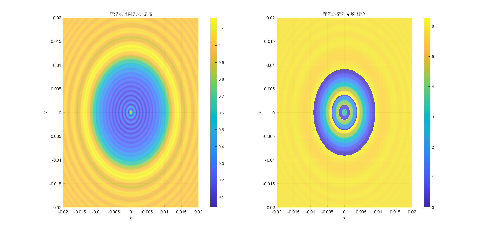
$ l = 5$
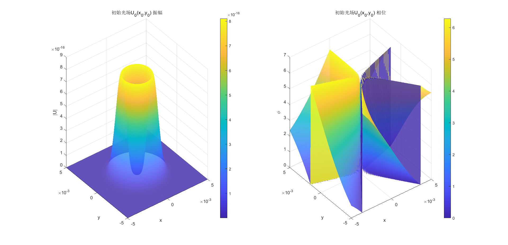
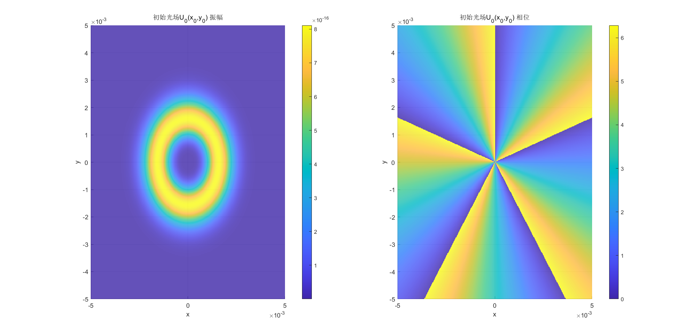
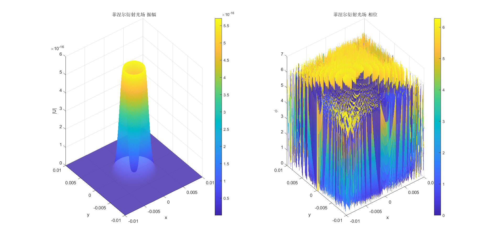
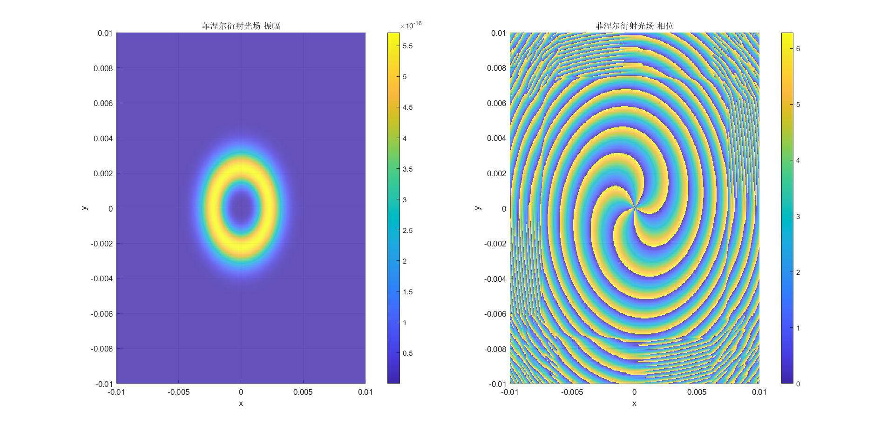
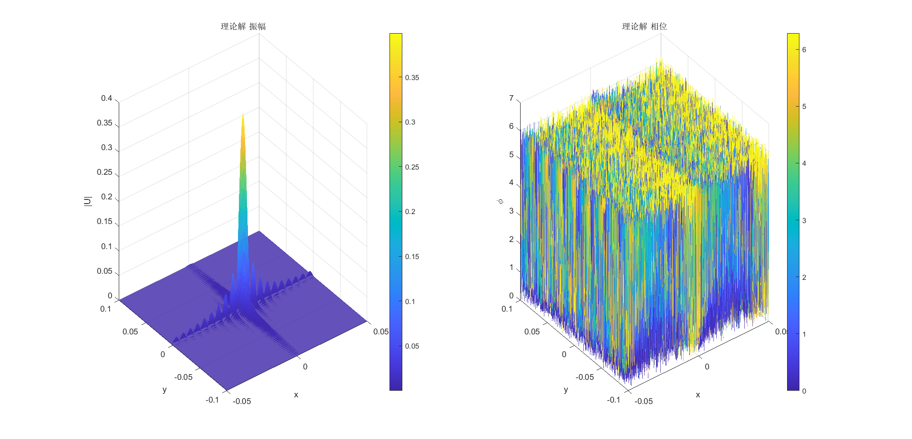
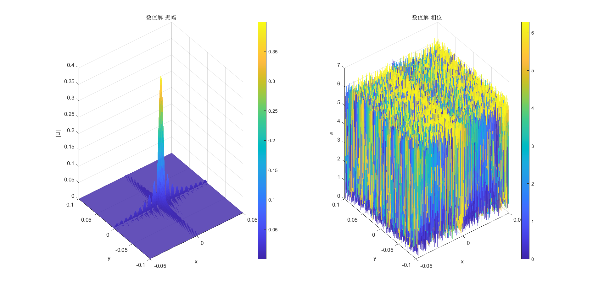
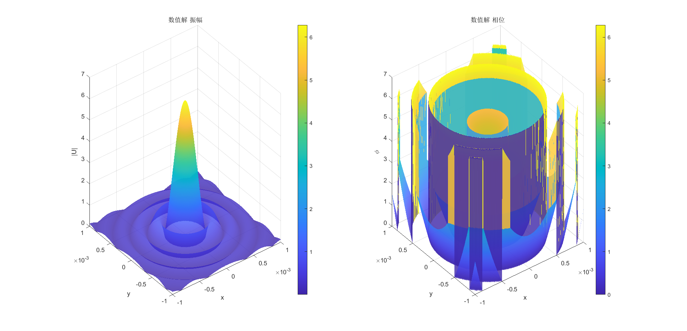